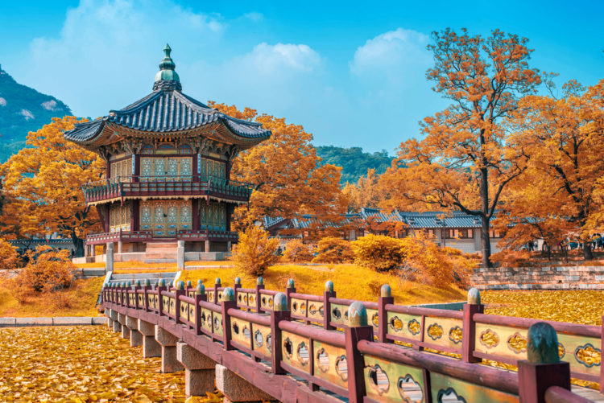
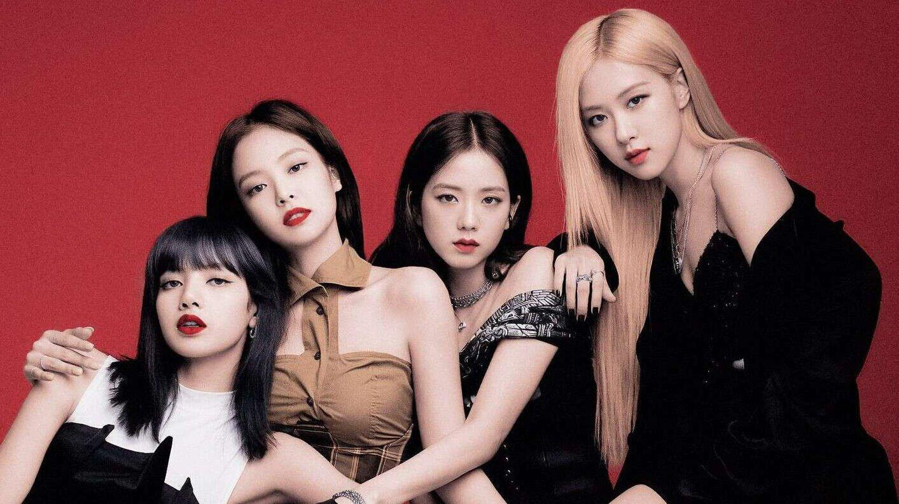

Південна Корея: цікаві місця, смачна їжа та kpop
Пам'ятки
Сеульська вежа на горі Намсан (남산서울타워). У 1975 році на вершині гори була побудована Сеульська вежа «N» або Namsan Tower,
яка незабаром стала символом міста. У 1981 році вежа була відкрита для відвідування і з того часу
стала місцем паломництва іноземних туристів та улюбленим місцем відпочинку для мешканців Сеулу. Заввишки 479,7 метрів —
одна з головних пам'яток столиці Південної Кореї, яка височить над містом з гори Намсан (243 метри) і забезпечує 48%
теле- і радіомовлення у столиці. Найцікавішим атракціоном тут є круговий оглядовий майданчик, розташований на висоті 400 метрів над містом,
куди відвідувачів доставляє швидкісний ліфт.
Храм Хедон Йонгунса (혜동 영궁사) в Пусані (부산). Хедон Йонгунса був побудований в 1376 за короля Коре Уване ченцем Наон Теса.
Храмова молитва Кульбопдан зроблена всередині печери праворуч від будівлі Теунчжон і відома своєю оригінальною будовою.
Найбільш незвичайними пам'ятками храму Йонгунса є 108-ступінчасті сходи та скеля Хемачжі Паві. Буддійський храм Хедон Йонгунса вважається
одним із найкрасивіших серед тих, які можна побачити на півдні держави. На території храму можна побачити багато цікавого:
вівтарі, пагоди, цілющі джерела, священні статуї Будди тощо.
Фортеця Хвасон (화성) у Сувоні (수원). На території «Діамантової фортеці» (інша назва замку) розташувалися численні
палацові споруди та високі колишні сторожові вежі – лише 40 будівель. Звання «квітучої» було надано фортеці за мальовничі панорамні види.
Могутні кам'яні стіни замку гордо височіють у кущі зелених садів. Якщо ви не бачили Хвасон – значить, не бачили справжні пам'ятки Південної Кореї.
Будівництво фортеці було доручено філософу й архітектору Чон Ягену (псевдонім Дасан). За планом будівництво мало тривати 10 років,
проте Хвасонська фортеця була споруджена всього за два з половиною роки, протягом 1794-1796 років.

Цікаві місця
Острів Чеджу (제주도) - це каміння вулканічного походження, що ввібрало в себе історію понад чотириста мільйонів років.
На острові знаходиться кілька згаслих вулканів, найвідоміший з яких називається Халласан.Крім захоплюючої дух острівної природи,
з її водоспадами і гірськими печерами, плантаціями мандаринів, бонсаями та орхідеями, тут можна помилуватися незвичайними кам'яними статуями –
гігантськими триметровими толхарубанами, які вважаються охоронцями Чеджу. Також обов'язково потрібно відвідати знаменитий Міст семи німф.
Кёнбоккун (경복궁) - головний палац країни. На шляху до цієї визначної пам'ятки Південної Кореї знаходиться кілька пам'яток,
присвячених середньовічному адміралу на ім'я Лі Сун Сін(이순신). Саме він свого часу вигадав броненосці. Також біля входу до палацу можна побачити
пам'ятник, зведений на честь правителя Сечножа, який створив корейську писемність. За цією фігурою і розташовуються ворота, що відкривають шлях
до визначних пам'яток. Ворота є відразу три входи. Головний вхід завжди закритий, оскільки він призначений законного правителя.
Національний парк Сораксан (설악산 국립공원) у Сокчо (속초). Місцеві жителі вважають парк головною перевагою країни.
Національний парк вдало поєднує в собі зазубрені вершини, чудові водоспади, глибокі печери та густі ліси. Також там є храм Шинхингса,
який належить до найдавніших буддистських споруд релігійного значення.Зачаровують дивовижні гірські схили з нестандартними формами та контурами.
Ліси Сораксана найбільш вигідно виглядають в осінній період, коли листя дерев починає міняти забарвлення. На гірських схилах можна побачити багато
рідкісних представників світу флори, яких більше ніде не зустрінеш.
Смачна їжа
Кімчі (김치) - гострий салат з пекінської капусти. Кімчі – це більше, ніж їжа: це ритуал та особлива культура, яка входить
до списку нематеріальної культурної спадщини людства ЮНЕСКО. Подвійна ферментація в розсолі не тільки забезпечує потрібний пряний смак,
але й насичує кимчі молочнокислими бактеріями. Саме тому кімчі вважається запорукою здоров'я та довголіття.
Токпокі (떡볶이) - рисові палички у гострому соусі. Культові рисові палички, просочені гострим та пряним соусом –
популярний корейський фаст-фуд. У Токпоккі можна додати м'ясо чи рибу, овочі, варене яйце, тофу та зелень, створюючи свій власний
обід чи вечерю. Першу згадку знайдено у кухонній книзі ХІХ століття. Ця страва зустрічалася з різними написаннями:
приготовлені на пару рисові коржики, смажені рисові коржики, гарячий горщик з рисовими коржами.
У Південній Кореї страва сьогодні настільки популярнп, що в Сеулі можна знайти цілий Токпоккі-сіті,
в якому розташовані вуличні ресторанчики, що пропонують різні варіації цієї страви.
Самгепсаль (삼겹살) - ця страва корейської кухні є підсмажені шматки свинячої жирної очеревини.
У перекладі з корейської самгепсаль означає «три шари м'яса» - - адже саме так виглядає грудинка на перерізі.
Більшість корейців вважають самгёпсаль своєю найулюбленішою стравою зі свинини.
По суті, це різновид корейського барбекю. У ресторанах грудинку подають їдокам у сирому вигляді.
М'ясо заздалегідь не маринується і не сдабривається спеціями. Учасники трапези самі готують собі м'ясо,
обсмажуючи його на спеціальній корейській сковороді для барбекю.
Сковорода має куполоподібний центр, трохи піднятий вгору.
Під час смаження м'яса витоплюваний жир стікає по випуклим стінкам вниз, де вздовж країв сковороди є прорізи.
Жир стікає в них і потрапляє в піддон, яким оснащена сковорода. Такий національний девайс ставиться прямо в
центр столу на портативну плитку.
K-pop


BTS ( 방탄소년단 ) — Колектив складається з семи учасників: RM (김남준, Kim Namjoon) - лідер групи, Jin (김석진, Kim Seokjin),
Suga (민윤기, Min Yoongi), J-hope (정호석, Jung Hoseok), Jimin (박지민, Park Jimin), V (김태형, Kim Taehyung)та Jungkook (전정국, Jeon Jeongguk).
Фанати BTS називаються ARMY.
BTS здобули світове визнання після випуску альбому Wings. Він дозволив гурту виграти номінацію
«Артист Року» на престижній музичній премії Mnet Asian Music Awards. У 2017 році BTS стали одним із провідних корейських гуртів на
світовій музичній арені. З моменту дебюту BTS продали понад 5 мільйонів своїх записів у всьому світі.
У квітні 2020 року BTS стали найбільш продаваними артистами в історії Південної Кореї.
У 2022 відвідали Білий будинок. Також отримали деякі номінації на Гремі 2021-2023.
У 2023 кожен з учасників випустив свій альбом.
В 2022 група BTS оголосила про перерву в кар'єрі, для служби в армії. Гурт відновить
свою діяльність в 2025.
Blackpink (블랙핑크) - південнокорейська girl-група. Колектив складається з чотирьох учасниць: Джису (Kim Jisoo, 김지수),
Дженні (Jennie Kim, 김제니), Розе (Park Chae Young, 박채영) та Ліси (Lalisa Manoban). Фанати Blackpink називаються Blink.
Дебют відбувся 8 серпня 2016 року із сингловим альбомом Square One. Blackpink стали першою жіночою групою YG Entertainment.
Їхні перші п'ять синглів були продані в США в кількості 113 тисяч цифрових копій,
а також всі їх альбоми побували на вершині чарту цифрових альбомів Billboard; Blackpink зайняли найвищу позицію для
жіночих корейських груп у чарті Social 50. Станом на 2022 рік Blackpink є найбільш популярною K-pop
girl-групою, чиї альбоми досягли найвищих позицій у Billboard Hot 100 та Billboard 200 . Вони також є першою жіночою
K-pop групою, яка має чотири сингли номер один у світовому чарті продажів цифрових пісень Billboard.
TXT (투모로바이투게더; Tomorrow X Together ) - південнокорейський бой-бенд , сформований в 2019 році компанією Big Hit Entertainment.
До складу групи входять п'ять учасників: Субін(수빈, Soobin), Йонджун(연준, Yeonjun), Техен(태현, Taehyun), Бомгю(범규, Beomgyu) і Хюнін Кай(휴닝카이, Huening Kai).
Фанати TXT називаються MOA.
Дебют відбувся 4 березня 2019 з міні-альбомом Dream Chapter: Star. Комерційний успіх гурту приніс учасникам кілька нагород «Новий артист року»,
у тому числі «Новачок року» на 34-й премії Golden Disk Awards та Melon Music Awards 2019 року,
«Новий виконавець року – Альбом» на 9-й премії Gaon Chart Music Awards та «Кращий новий чоловічий артист»
на премії Mnet Asian Music Awards.